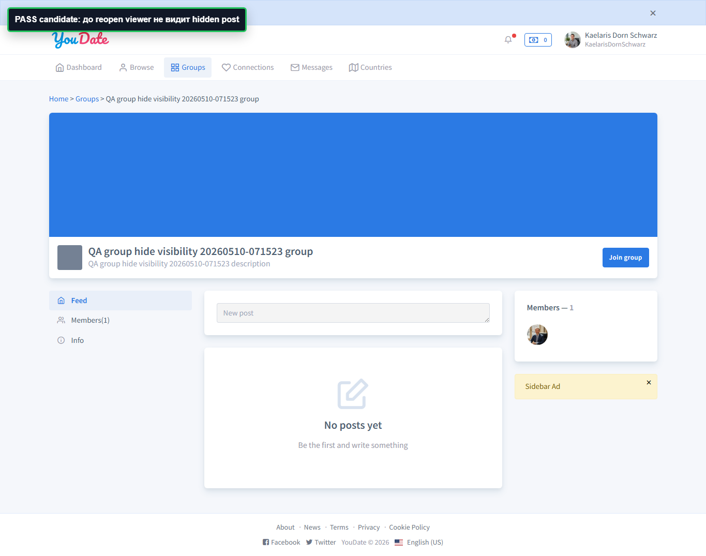
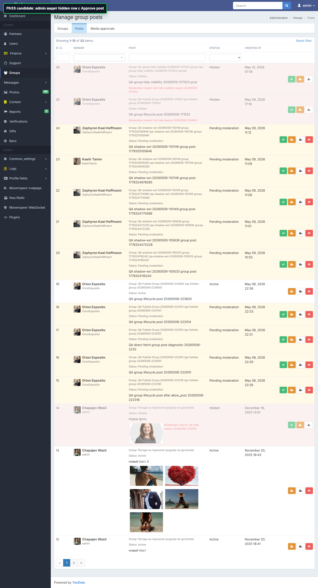
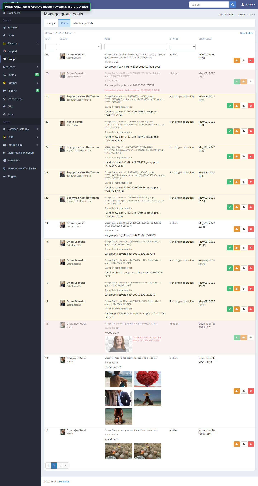
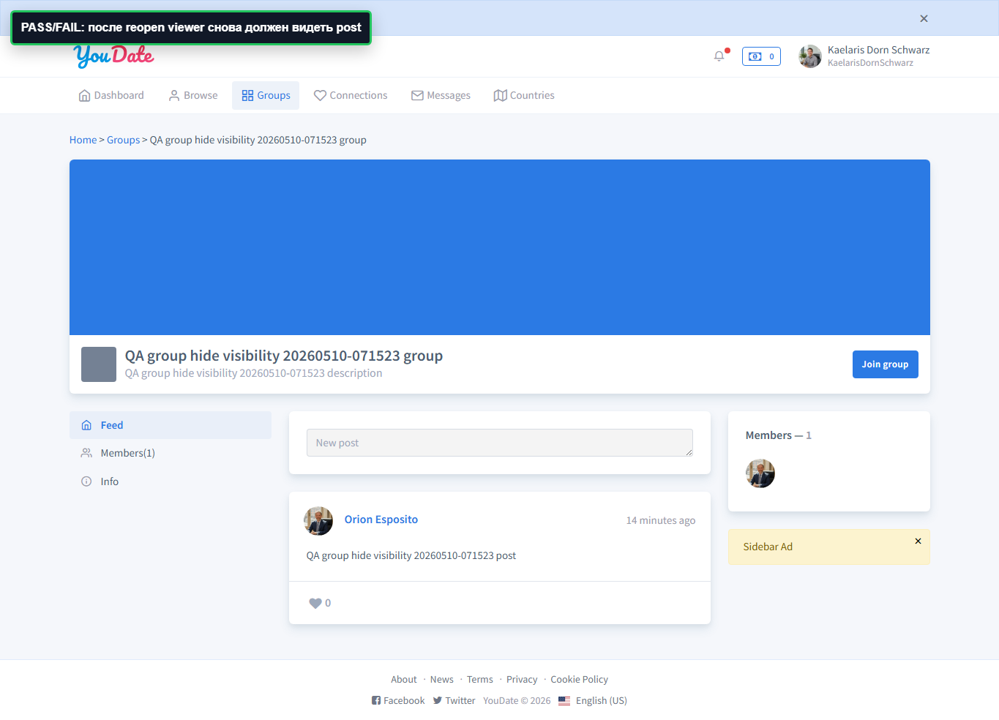

Дата прохода: 2026-05-10. Проверен остаточный WARN из предыдущего отчета: является ли `Approve post` на hidden row фактическим повторным открытием поста.
ИтогPASS
PostID 26
Viewer proofPASS
Короткий вывод
Статус
Проверка
Что получили
Вывод
PASS
Before reopen
Viewer U166 до reopen не видит hidden post ID 26.
Исходное состояние корректное: пост действительно скрыт.
PASS
Admin action
На hidden row есть `Approve post`; POST по action прошел.
`Approve post` доступен для скрытого поста.
PASS
Admin state
После `Approve post` row post ID 26 стала `Active`.
С точки зрения админки действие работает как reopen.
PASS
Viewer state
После reopen viewer U166 снова видит точный текст `QA group hide visibility 20260510-071523 post`.
Повторное открытие доказано user-side.
Для Игоря
PASS
GROUP-POST-REOPEN-IS-APPROVE
Факт: `Approve post` на hidden row переводит post ID 26 в Active, после чего второй пользователь снова видит тот же пост.
Вывод: функционального дефекта reopen не подтверждено. Остался UX-вопрос по названию кнопки.
Где смотреть: `/en/admin/group/posts`, action `/en/admin/group/approve-post?id=26`, viewer page `/en/groups/qa-group-hide-visibility-20260510-071523-group`.
Evidence screenshots
PASSДо reopen viewer не видит hidden post

PASSAdmin видит hidden row с Approve post

PASSПосле Approve post статус Active

PASSПосле reopen viewer снова видит пост

Матрица Алексея
Квадрант
Наблюдение
Совет
Как проверить готовность
Важно, но не срочно
Функционально reopen работает через `Approve post`, но название кнопки неочевидно для hidden-состояния.
Если модератор должен понимать действие без знания кода, переименовать кнопку на hidden row в `Reopen` / `Показать снова`.
Модератор открывает hidden row и сразу понимает, что кнопка вернет пост в публичную ленту.